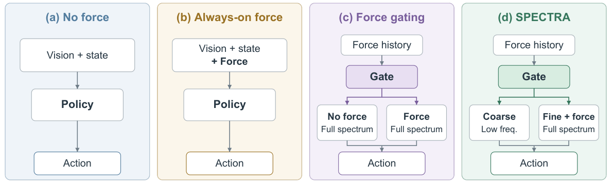

Abstract
Robot manipulation requires smooth movements as well as precise adjustments. Force and tactile feedback can help a robot understand its interaction with an object, especially when visual observations alone are insufficient. However, this feedback is not equally useful throughout a task. Similarly, predicting finer motion details can help the robot make necessary corrections, but can also reproduce noise in demonstrations. An effective policy should therefore learn when force feedback and finer motion are useful. We introduce SPECTRA, a force-aware spectral diffusion policy that makes this choice during execution. It combines a coarse policy for smooth, low-frequency motion with a fine policy that uses additional force/tactile feedback and can predict the full range of motion frequencies. A learned gate uses recent force history to select the policy that generates the next action chunk. Experiments on simulated and real-robot manipulation tasks show that SPECTRA improves real-robot task success by up to 20 percentage points over the strongest evaluated baseline on the corresponding task. Comparisons with individual policies further show that the benefit of force feedback depends on action bandwidth, supporting its selective use with fine motion prediction.
Architecture

We introduce SPECTRA, a force-aware spectral diffusion framework with independently trained coarse and fine policies. The coarse policy predicts low-frequency motion; the fine policy uses force/tactile memory and predicts the full action spectrum. Coefficient-wise normalization balances spectral signal-to-noise ratios during training. A gate uses recent force history to select one policy per action chunk, learning from their relative prediction errors on held-out demonstrations without manually labeled contact phases.
Evaluation and Results
Simulation Experiments
We evaluate SPECTRA on four ManiSkill (Mu et al., 2021) tasks (PegInsertionSide, PickCube, PlugCharger, and StackCube) and two MimicGen tasks (Coffee and Threading). Each task uses 100 demonstration episodes: 50 for policy training and 50 for gate calibration. We report task success rates on independently generated scene configurations.
We compare Diffusion Policy (DP) and flow matching (FM) in action and DCT space (Table 1). For each configuration, No Force uses vision and proprioception, Always-on Force adds force throughout execution, and Force Gating selects between force-blind and force-aware policies with full action support. SPECTRA jointly selects sensing and motion detail through a force-blind low-frequency policy and a force-conditioned full-spectrum policy.
| Policy | Space | ManiSkill | MimicGen | ||||
|---|---|---|---|---|---|---|---|
| Peg Insertion |
Pick Cube |
Plug Charger |
Stack Cube |
Coffee | Threading | ||
| (a) No force | |||||||
| DP | Action | 30.0 | 55.0 | 10.0 | 60.0 | 77.5 | 7.5 |
| DP | DCT | 25.0 | 50.0 | 22.5 | 75.0 | 67.5 | 60.0 |
| FM | Action | 27.5 | 42.5 | 7.5 | 30.0 | 65.0 | 25.0 |
| FM | DCT | 45.0 | 42.5 | 10.0 | 52.5 | 40.0 | 35.0 |
| (b) Always-on force | |||||||
| DP | Action | 35.0 | 57.5 | 12.5 | 55.0 | 62.5 | 50.0 |
| DP | DCT | 27.5 | 62.5 | 20.0 | 65.0 | 75.0 | 67.5 |
| FM | Action | 32.5 | 32.5 | 12.5 | 40.0 | 50.0 | 52.5 |
| FM | DCT | 42.5 | 55.0 | 10.0 | 55.0 | 32.5 | 45.0 |
| (c) Force gating | |||||||
| DP | Action | 37.5 | 57.5 | 32.5 | 52.5 | 57.5 | 62.5 |
| DP | DCT | 27.5 | 62.5 | 25.0 | 50.0 | 57.5 | 77.5 |
| FM | Action | 30.0 | 40.0 | 0.0 | 30.0 | 60.0 | 62.5 |
| FM | DCT | 37.5 | 60.0 | 12.5 | 30.0 | 37.5 | 22.5 |
| (d) SPECTRA | DCT | 40.0 | 77.5 | 32.5 | 82.5 | 82.5 | 80.0 |
Policy Architectures

Table 1 shows that SPECTRA outperforms force-blind action-space DP and FM on all six tasks. It achieves the highest success rates on PickCube, StackCube, Coffee, and Threading, and ties the best result on PlugCharger. Its mean success rate is 65.8%, compared with 52.9% for always using the fine policy and 50.0% for the strongest generic force-gating baseline, corresponding to gains of 12.9 and 15.8 percentage points, respectively. PegInsertionSide remains an exception: force-blind DCT-space FM achieves 45.0%, compared with 40.0% for SPECTRA.
Real-Robot Experiments
We evaluate SPECTRA on an OpenArm robot equipped with a fixed camera and a wrist-mounted camera.
For each task, we collect 80 demonstration episodes, using 40 for policy training and 40 for gate calibration. Coca-Cola placement additionally requires placing the can without an audible contact sound, making gentle placement part of the success criterion. We evaluate whiteboard erasing by the percentage of text removed and the remaining tasks by success rate.

Figure 5 shows that SPECTRA outperforms force-blind DP and FM on four of five tasks. Wet-wipe extraction reaches 100% success, compared with 50% for DP and 70% for FM; quiet Coca-Cola placement reaches 90%, versus 80% for both baselines. Whiteboard erasing removes 89.5% of the text, compared with 77.5% for DP and 68.5% for FM. Jigglypuff placement is the exception: SPECTRA achieves 80% success, exceeding DP but below FM’s 90%.
8-second excerpts at original playback speed.
When Force Feedback Helps
| Task | Low-frequency | Full-spectrum | ||
|---|---|---|---|---|
| No force → With force (%) | Gain (pp) | No force → With force (%) | Gain (pp) | |
| PegInsertionSide | 25 → 20 | -5 | 25 → 27.5 | +2.5 |
| PickCube | 42.5 → 37.5 | -5 | 50 → 62.5 | +12.5 |
| StackCube | 65 → 65 | 0 | 75 → 65 | -10 |
| Coffee | 57.5 → 47.5 | -10 | 67.5 → 75 | +7.5 |
| Threading | 52.5 → 47.5 | -5 | 60 → 67.5 | +7.5 |
We compare low-frequency and full-spectrum policies with and without force conditioning, keeping expert selection disabled to isolate the interaction between force and action bandwidth. Figure 3 shows that adding force provides no gain under low-frequency restriction, but improves full-spectrum success on four of five tasks. On PickCube, the effect of force changes from a 5-percentage-point decline to a 12.5-percentage-point gain when the full spectrum is available. StackCube is the exception: force leaves low-frequency performance unchanged and reduces full-spectrum success by 10 percentage points.
BibTeX
@unpublished{spectra,
title = {{SPECTRA}: Force-Gated Spectral Diffusion for Robot Manipulation},
author = {{Anonymous}},
note = {Paper under double-blind review}
}